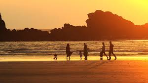

Kannur District
Description
- Population: 2,553,000
- Area: 2,960 sq km
Tourist Spots
- St. Angelo Fort

- Muzhappilangad Beach 
Monuments
- Parassinikadavu Muthappan Temple
- Arakkal Museum
Interesting Facts
- Kannur is known as the "Land of Looms and Lores".
- Theyyam, a popular ritual art form, is performed in Kannur.
BACK TO THE MAP